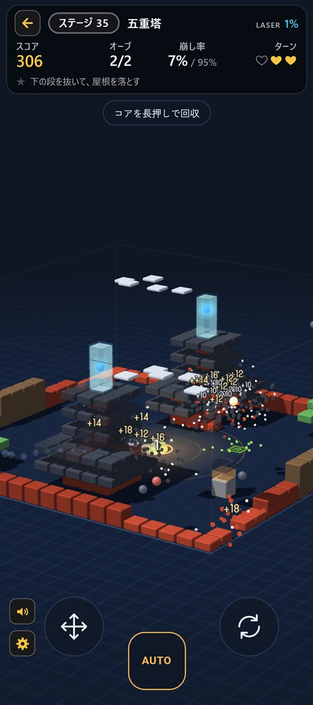
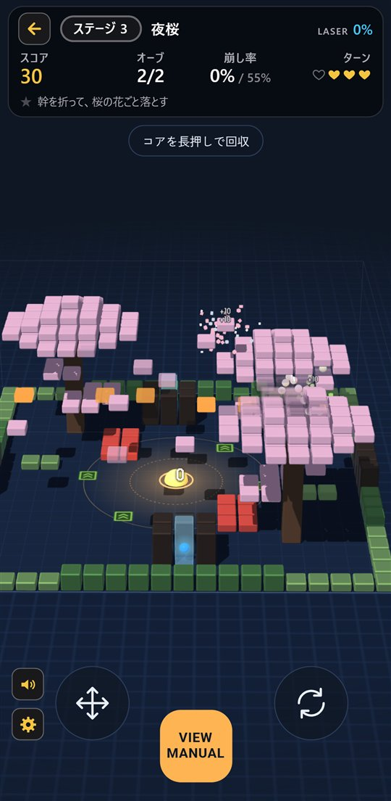
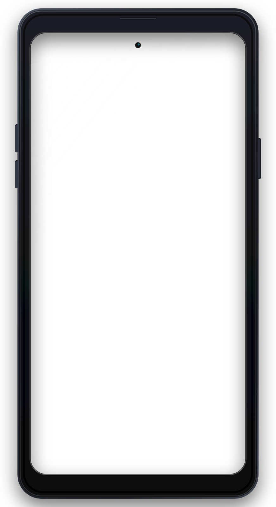
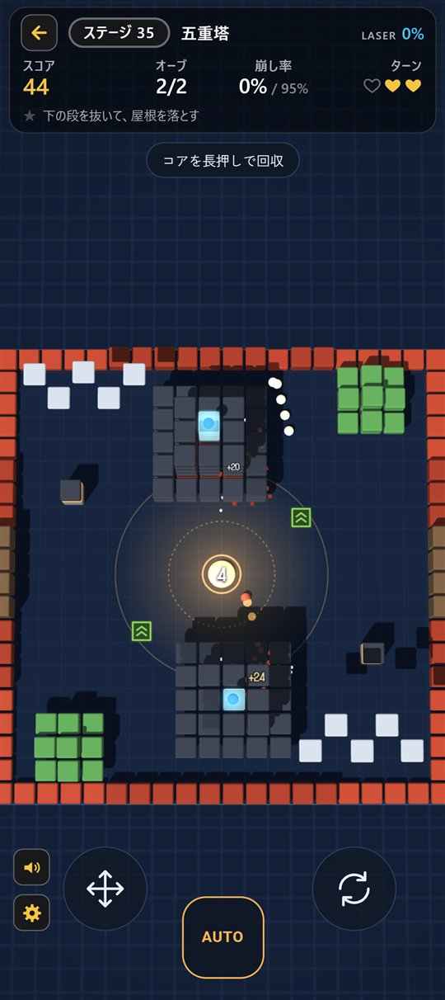
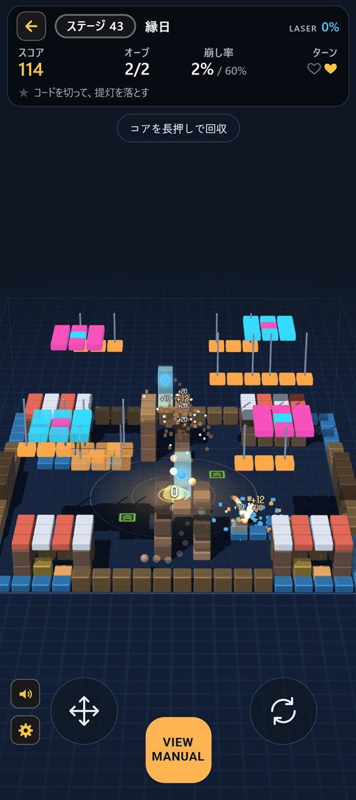
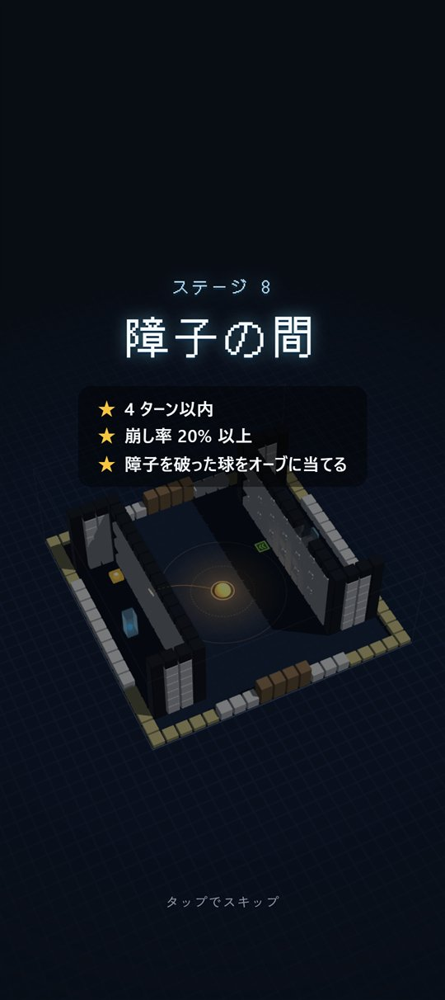
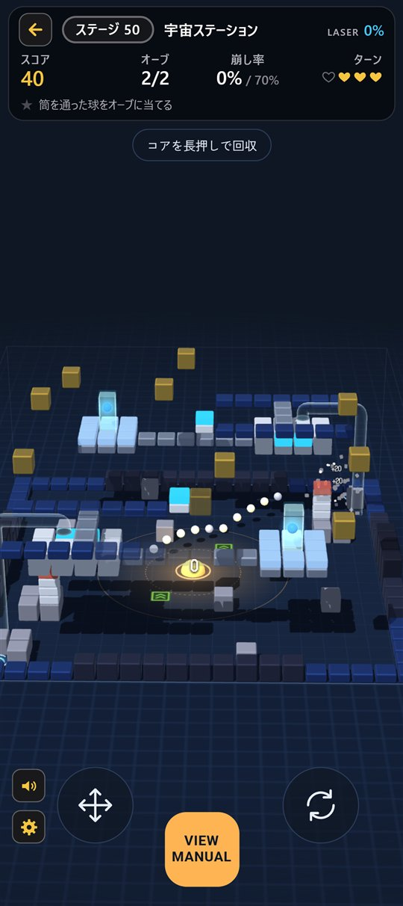
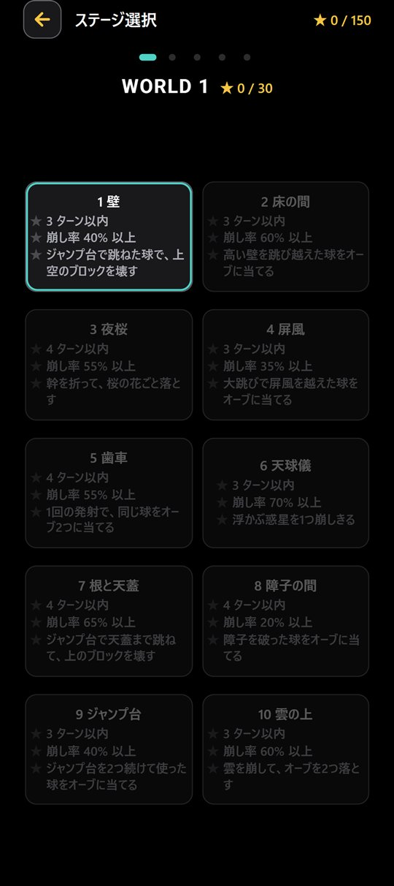

50の箱庭
枯山水、障子の間、夜桜、五重塔、沈没船、繁華街、宇宙ステーション……。10面ずつ5つのワールドに、手作りの箱庭が並びます。
箱庭ブロック崩し Core Salvo は、手のひらサイズの3Dの箱庭を、真ん中の「コア」から撃った球で崩していくブロック崩しです。撃った球は跳ね回って、コアに戻ってきます。枯山水、五重塔、夜桜、宇宙ステーション……。全50面の箱庭で、盤面のオーブを全部割ればクリア。会員登録なし・課金なしで、すぐに遊べます。


画面に触れると、指から狙いの棒が伸びます。棒の先で狙いを決めて、発射ボタンで撃ちます。コアの近くを狙うと転がり、遠くを狙うほど上向きに飛びます。
撃った球は箱庭を跳ね回って、コアに戻ってきます。コアを長押しすると、飛んでいる球をまとめて呼び戻せます。
決められたターン数のうちに、盤面のオーブを全部割ればステージクリア。ターンが少ないほど★に近づきます。

枯山水、障子の間、夜桜、五重塔、沈没船、繁華街、宇宙ステーション……。10面ずつ5つのワールドに、手作りの箱庭が並びます。

ブロックは床だけでなく、空中にも浮かんでいます。指を少し止めると空中のブロックが透けて、その奥まで狙えます。

ジャンプ台で高い壁を跳び越える、透明な筒に球を通す、コードを切って吊るした物を落とす、根元を崩して塔を倒す。ワールドごとに新しいしかけが出てきます。

ターン数、崩し率、その面ならではの課題で★を1つずつ。「筒を通った球をオーブに当てる」など、課題は面ごとに違います。

盤面は指で回して、動かして、2本の指で拡大できます。スマホの傾きで上下を見回すこともできます（設定でオン・オフ）。

各ワールドには「発射数+1 ブロック」が1つ隠れています。見つけて割ると、一度に撃てる球が増えます。クリアした面は何度でも遊び直せます。
どう撃てば崩れるかを考えて、狙いどおりに崩れたときの気持ちよさを、自分のペースで楽しめるブロック崩しです。
撃った球は、跳ね回ってコアに戻ります。球を失うことはありません。
ターン切れになっても、その面をすぐにやり直せます。考え直して、もう一度。
すき間時間に1面、休みの日にワールドひとつ。短い休憩にもちょうどいい長さです。
画面全体をチカチカさせる演出は使っていません。落ち着いて見られます。
はい、無料で最後まで遊べます。画面に広告が表示されますが、課金や会員登録はありません。
次のワールドは、前のワールドで★を23個集めると開きます。★はターン数・崩し率・課題で1つずつなので、取れていない★の条件を、上の得点ボードのタップで確かめてみてください。
狙いの場所が遠いほど、球は上向きに飛びます。床を転がしたいときは、コアの近くを狙ってください。
「もう一度」で、その面をすぐにやり直せます。ジャンプ台や筒などのしかけを使うと、一度に多く崩せることがあります。
はい、記録は自動で保存されます。データは端末内にのみ保存されます。
いまは Android 版だけです。
ご自分のペースで、箱庭を崩してください。